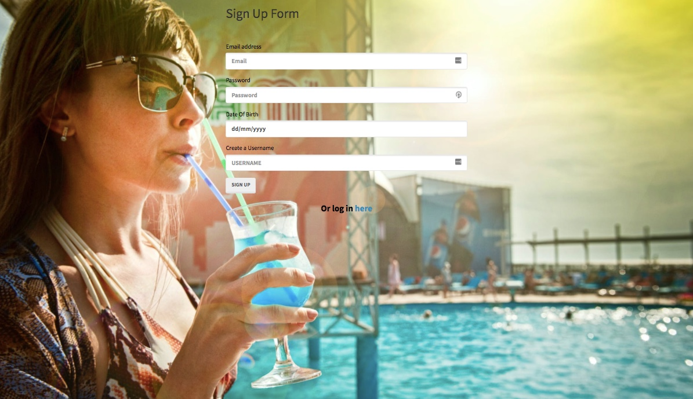
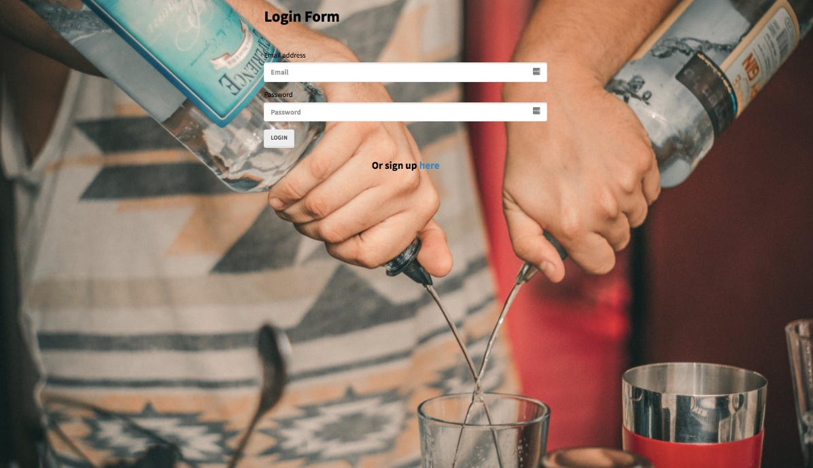
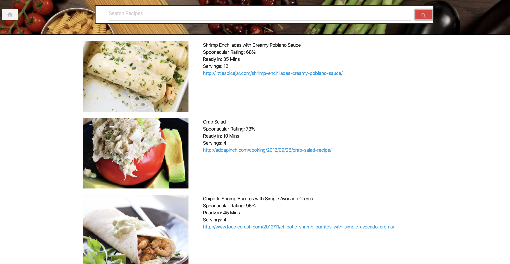
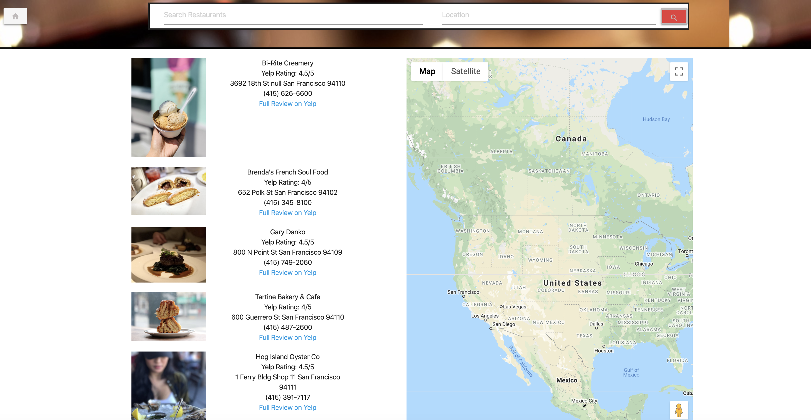

About
Me
I enjoy figuring things out and understanding why things
work the way they do. I also love helping others. As a lifelong learner with a passion in finding solutions, teaching math has supported me in many ways. I maintain an open mind and bring a lot of energy and support to the school communities I have been a part of and beyond, and they've given me so much back.
Services
What I can do for you
Instructor
Taught all levels of math from 6th grade math to Algebra 2.
Advisory
Support students in being the best person they can academically and socially.
School Spirit
It is likely you have seen me at one of the school events, cheering on students, encoruaging and supporting them in their interests and pursuits.
6th Grade Math
7th Grade Math
Pre-Algebra
Algebra 1
Geometry
Algebra 2
Portfolio
What I've done in coding
Cocktails? Is a mobile responsive web application built from scratch by four collaborators, designed to give users
different ideas for drinks based on a given main ingredient. Using a server side API, users can use it when out and
wondering what they should order or while at home, what they can make.
The user inputs an ingredient and can search through drink options that include that ingredient. Then they are provided
the drink name, instructions on how to make the drink, a recipe with amounts of various ingredients, and a photo of the
drink. Users can ‘like’ and save drinks they enjoy, which then pins the drink name on the side and they can easily
return to the drink whenever they would like. The app is hosted by Heroku with cloud based database JawsDB, that saves
user data.
The landing page is a short video, has buttons linking to signup and login pages. The signup page includes inputs for
email, password, date of birth and a username. The email includes a validator to ensure an email is entered. The
password has a validator to ensure that the password entered is within the necessary range of the number of characters.
The date of birth has a validator to ensure users are over 21 in order to use the app, and if not, sends them to a fun
age appropriate page. And the app features a logout function so users can ensure their liked drinks are protected.




In or Out is a website application built from scratch designed to simplify an everyday problem. Utilizing integrated
data from several server-side API requests, "In or Out" simplifies the decision making between creating meal
alternatives or finding a great local eatery at a desired location.
If "In" is chosen, the user can input a food item which will then provide several recipe options. Each result displays
the amount of time it takes to complete, dish rating, serving size, and a link displaying the step by step process to
complete the meal.

If "Out" is chosen, the user is prompted to input both a specific food and/or the desired location they wish to search.
Once entered, the display will provide several options depending on the original input. Each item listed will include
the name of the location, average rating, address, phone number, and a link redirecting the user to customer reviews.
In or Out is hosted GitHub and is designed to be responsive.

Personal
A little about myself
I look forward to meeting you if I haven’t already! My goal is to find solutions
that improve my life and those of others. I’ve spent 16 years as a successful
Mathematics educator, supporting students’ learning, growth, and development
as problem solvers. I am a person who cares deeply about others, dedicated to the
task at hand, and believe that there usually is a solution, even when there doesn't seem
to be, maybe we just haven't found it yet.
In addition to my interest in education, I have a strong passion for exploring the world
by going to places that speak other languages and have different cultures than here.
I live an active lifestyle, have a thirst for understanding how stuff works, and
play well with others.
- Completed LA Marathon
- Lived in Cambodia, Vietnam, Costa Rica
- Traveled to over 25 countries
- Budget traveler, love finding travel deals
- Fear of heights
- Enjoy climbing walls
- Picky Eater
- Conversational in Vietnamese and Spanish
- Motorcycle rider